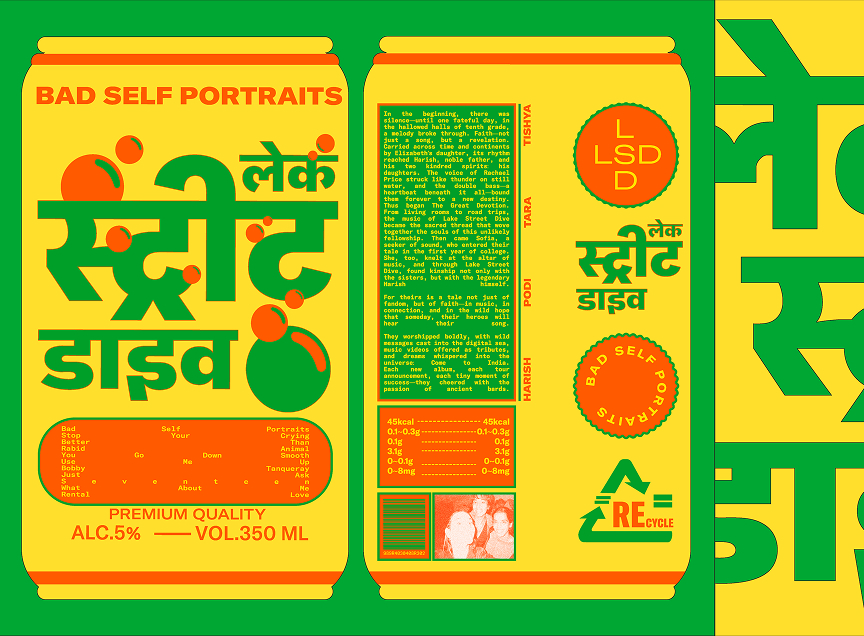
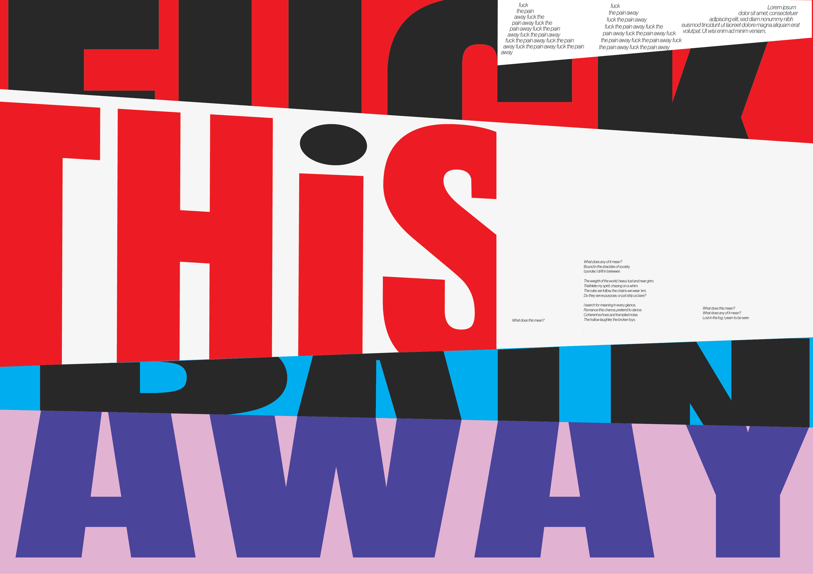
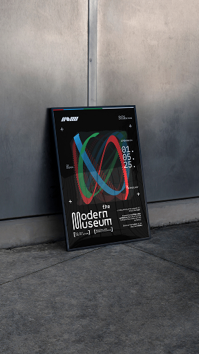
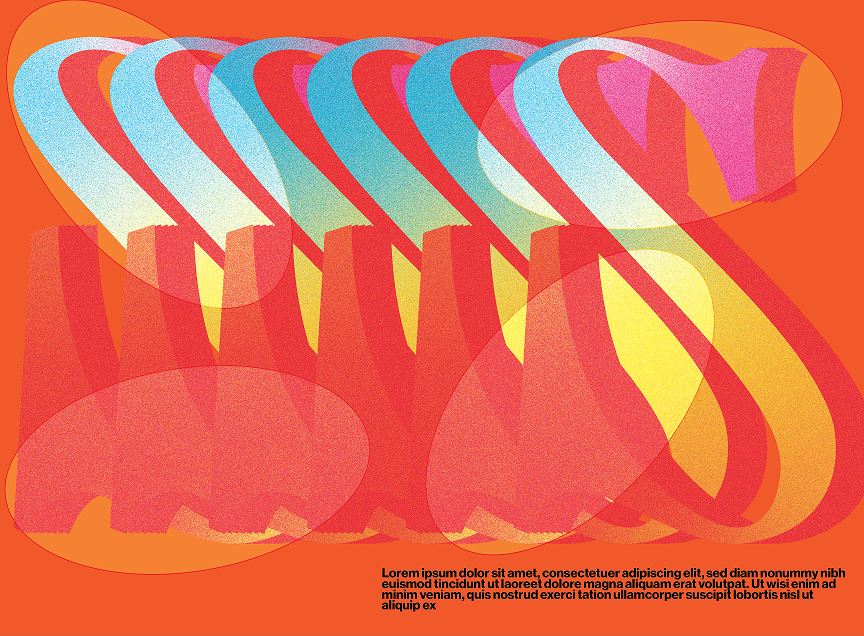
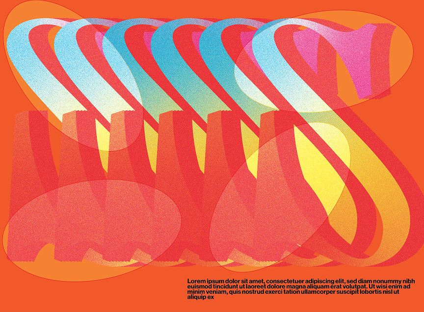
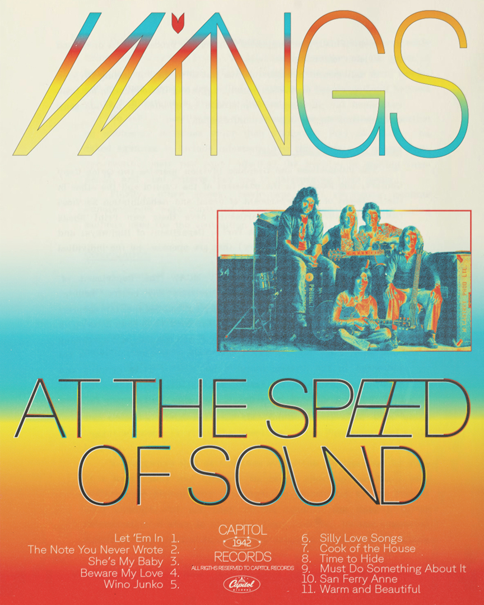
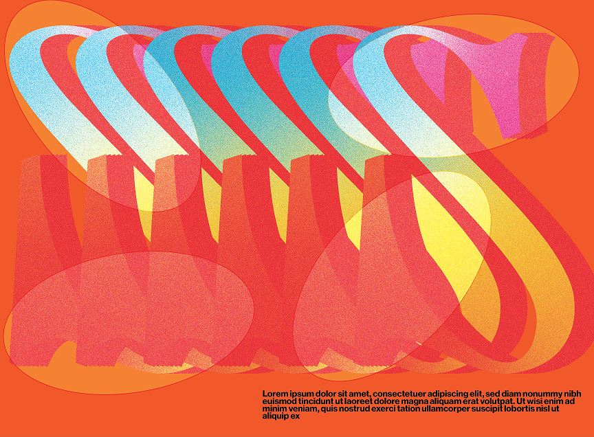

 


I'm a designer and creative coder working at the intersection of generative identities and
visual systems. My practice focuses on creating autonomous branding tools that empower workflows and enable internal teams to adapt design systems with flexibility.
My work draws from an interest in typography and motion, exploring how movement
& code can expand the possibilities of identity design.
Currently, I work at Public Knowledge Studios, where I research and develop
generative & flexible visual systems.
